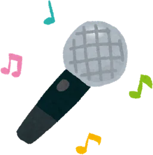

Đọc một câu hoặc nói tự do, máy chấm nghe từng âm trong từng chữ: âm nào đúng, âm nào sai, âm nào bị nuốt, kèm cách sửa và cho bạn đọc lại đến khi chuẩn.

Chọn nhóm âm muốn luyện
Gợi ý chủ đề (hoặc nói bất cứ điều gì bạn muốn)
Kiểm tra lại lời bạn nói (sửa nếu máy nghe nhầm)